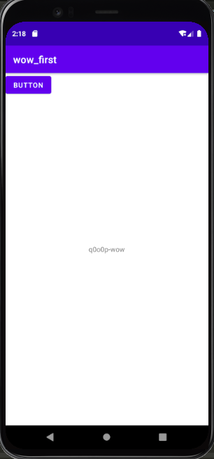
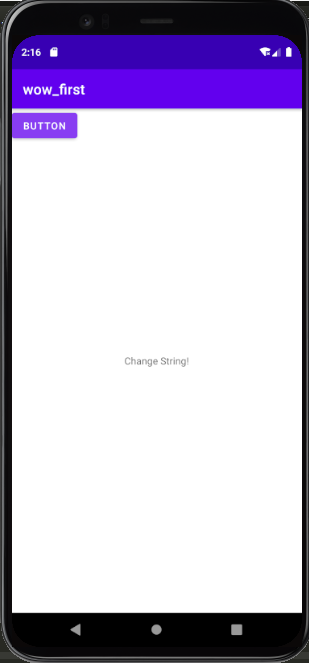
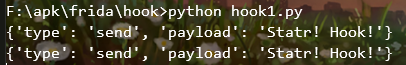

hook介绍 Hook 翻译过来就是 “钩子” 的意思，钩子实际上是一个处理消息的程序段，通过系统调用，把它挂入系统。每当特定的消息发出，在没有到达目的窗口前，钩子程序就先捕获该消息，亦即钩子函数先得到控制权。这时钩子函数即可以加工处理（改变）该消息，也可以不作处理而继续传递该消息，还可以强制结束消息的传递。Hook 技术无论对安全软件还是恶意软件都是十分关键的一项技术，其本质就是劫持函数调用 。
frida环境配置 https://q0o0p.top/2021/02/19/Android-Reverse/
非root设备使用Frida 非root设备，需要反编译目标应用包，然后注入frida-gadget
1 $ apktool d myapp.apk -o extractedFolder
将frida本机库（frida-gadget）添加到APK的/ lib文件夹中。可以在Frida的发行页面中找到每种体系结构的小工具库。确保将正确架构的库添加到/lib例如/lib/armeabi32位ARM设备下的合适文件夹中。
1 2 3 4 5 6 7 8 9 10 11 12 13 14 15 16 17 18 19 20 21 22 23 24 25 26 27 $ apktool --version $ apktool d -o out_dir original.apk I: Using Apktool 2.2.2 on original.apk I: Loading resource table... I: Decoding AndroidManifest.xml with resources... I: Loading resource table from file: ~/.local /share/apktool/framework/1.apk I: Regular manifest package... I: Decoding file-resources... I: Decoding values XMLs... I: Baksmaling classes.dex... I: Copying assets and libs... I: Copying unknown files... I: Copying original files... $ wget https://github.com/frida/frida/releases/download/9.1.26/frida-gadget-9.1.26-android-arm.so.xz 2017-04-11 10:48:45 (3.29 MB/s) - ‘frida-gadget-9.1.26-android-arm.so.xz’ saved [3680748/3680748] $ unxz frida-gadget-9.1.26-android-arm.so.xz $ ls frida-gadget-9.1.26-android-arm.so $ cp frida_libs/armeabi/frida-gadget-9.1.26-android-arm.so out_dir/lib/armeabi/libfrida-gadget.so
注入System.loadLibrary(“frida-gadget”)调用到应用程序的字节代码，加载任何其他字节码执行或任何本地代码之前的理想。合适的位置通常是应用程序的入口点类的静态初始化程序，例如，通过清单找到的主应用程序Activity。
一种简单的方法是在适当的函数中添加以下smali代码：const-string v0, "frida-gadget"invoke-static {v0}, Ljava/lang/System;->loadLibrary(Ljava/lang/String;)V
如果清单中还没有Internet权限，请将其添加到清单中，以便Frida小工具可以打开套接字。
1 <uses-permission android:name ="android.permission.INTERNET" />
重新打包应用程序：
1 2 3 4 5 6 7 8 9 $ apktool b -o repackaged.apk out_dir/ I: Using Apktool 2.2.2 I: Checking whether sources has changed... I: Smaling smali folder into classes.dex... I: Checking whether resources has changed... I: Building resources... I: Copying libs... (/lib) I: Building apk file... I: Copying unknown files/dir...
使用您自己的密钥对更新的APK进行签名并zipalign。
1 2 3 4 5 6 7 8 9 10 11 # if you dont have a keystore already, here's how to create one $ keytool -genkey -v -keystore custom.keystore -alias mykeyaliasname -keyalg RSA -keysize 2048 -validity 10000 # sign the APK $ jarsigner -sigalg SHA1withRSA -digestalg SHA1 -keystore mycustom.keystore -storepass mystorepass repackaged.apk mykeyaliasname # verify the signature you just created $ jarsigner -verify repackaged.apk # zipalign the APK $ zipalign 4 repackaged.apk repackaged-final.apk
将更新的APK安装到设备上。
1 2 3 4 5 $ frida-ps -U Waiting for USB device to appear... PID Name ----- ------ 16071 Gadget
例子:
1 2 3 4 5 6 7 8 9 10 11 12 13 14 15 16 17 18 19 20 21 22 23 24 25 $ frida -U Gadget ____ / _ | Frida 9.1.26 - A world-class dynamic instrumentation framework | (_| | > _ | Commands: /_/ |_| help -> Displays the help system . . . . object? -> Display information about 'object' . . . . exit /quit -> Exit . . . . . . . . More info at http://www.frida.re/docs/home/ Waiting for USB device to appear... [USB::Samsung SM-G925F::Gadget]-> Java.available true [USB::Samsung SM-G925F::Gadget]-> $ frida-trace -U -i open Gadget Instrumenting functions ... open: Auto-generated handler at "/tmp/test/__handlers__/libc.so/open.js" Started tracing 1 function . Press Ctrl+C to stop. /* TID 0x2df7 */ 4870 ms open(pathname=0xa280b100, flags=0x241) 4873 ms open(pathname=0xb6d69df3, flags=0x2) /* TID 0x33d2 */ 115198 ms open(pathname=0xb6d69df3, flags=0x2) 115227 ms open(pathname=0xb6d69df3, flags=0x2)
梆梆加固函数抽取执行流程：函数的第一条指令是goto，然后中间是一系列的nop(预留空间)，第一条指令goto到末尾，跳过预留空间，跳转到的位置是一条invoke指令，调用壳中的还原函数，还原函数会将前面预留空间(一系列nop)还原成函数原指令，然后执行流程再跳转到第一条goto指令的后面，继续执行已经还原好的函数原指令。
Frida hook java层 Frida 大致原理是手机端安装一个 server 程序，然后把手机端的端口转到 PC端，PC端写 python 脚本进行通信，而 python 脚本中需要 hook 的代码采用 javascript 语言。
写一个最基础的demo进行测试 客户端运行Frida
1 2 cd /data/local /tmp./frida-server
打开电脑端运行脚本
1 2 3 4 adb forward tcp:27042 tcp:27042 python F:\apk\frida\hook\hook1.py
apk包名: top.q0o0p.wow_first
1 2 3 4 5 6 7 8 9 10 11 12 13 14 15 16 17 18 19 20 21 import sysimport fridajscode = """ Java.perform(function(){ var MainActivity = Java.use('top.q0o0p.wow_first.MainActivity'); //获得MainActivity类 MainActivity.testFrida.implementation = function(){ //Hook testFrida函数，用js自己实现 send('Statr! Hook!'); //发送信息，用于回调python中的函数 return 'Change String!' //劫持返回值，修改为我们想要返回的字符串 } }); """ def on_message (message,data ): print (message) process = frida.get_remote_device().attach('top.q0o0p.wow_first' ) script = process.create_script(jscode) script.on('message' ,on_message) script.load() sys.stdin.read()
hook java层之前,点击Button后的效果

hook java层之后,可看到字符串已经被替换成我们要替换的了

执行python后的效果:

修改Java层的函数参数和返回值 实例:
1 2 3 4 5 6 7 8 9 10 11 12 13 14 15 16 17 18 19 20 21 22 23 24 25 26 27 28 29 30 31 32 33 34 35 36 37 38 39 40 41 42 43 44 import frida import sys js_code = """ Java.perform(function() { // 获取当前安卓设备的安卓版本 var v = Java.androidVersion; send('version:' + v); //获取该应用加载的类 var class_names = Java.enumerateLoadedClassesSync(); for (var i = 0; i < class_names.length; i++){ send('class name:' + class_names[i]) } var MainActivity = Java.use('com.yaotong.crackme.MainActivity'); //获得MainActivity类 var java_string = Java.use('java.lang.String'); MainActivity.securityCheck.implementation = function(java_string){ send('I am here'); // 发送信息，用于回调python中的函数 return true; //劫持返回值，修改为我们想要返回的字符串 } }); """ def on_message_1 (msg, data ): if msg['type' ] == 'send' : print (f'[*] {msg["payload" ]} ' ) else : print (msg) def on_message (msg, data ): print (msg) process = frida.get_remote_device().attach('com.yaotong.crackme' ) script = process.create_script(js_code) script.on('message' , on_message) script.load() sys.stdin.read()
任意输入，点击按钮都可以通过。
hook 普通方法,构造方法,重载方法,传入的参数的对象
1 2 3 4 5 6 7 8 9 10 11 12 13 14 15 16 17 18 19 20 21 22 23 24 25 26 27 28 29 30 31 32 33 34 35 36 37 38 39 40 41 42 43 44 45 46 47 48 49 50 51 52 53 54 55 56 57 58 59 60 61 62 63 64 65 66 67 68 69 import sysimport fridajscode = """ Java.perform(function(){ //普通方法 var MainActivity = Java.use('top.q0o0p.hook_1.Utils'); //获得MainActivity类 MainActivity.getCalc.implementation = function(a,b){ //Hook testFrida函数，用js自己实现 console.log("Hook start"); send('get info!'); //发送信息，用于回调python中的函数 //return 'wow q0o0p wow!' ;//劫持返回值，修改为我们想要返回的字符串 var num= this.getCalc(a,b) //获取原始数据 send(num) return this._getCalc(10,20,30); } //构造方法 var Activity1 = Java.use('top.q0o0p.hook_1.Money'); //获得MainActivity类 /* Activity1.$init.implementation = function(a,b){ //Hook testFrida函数，用js自己实现 console.log("Hook start...."); send(arguments[0]); //发送信息，用于回调python中的函数 //return 'wow q0o0p wow!' ;//劫持返回值，修改为我们想要返回的字符串 var num= this.$init(50,"q0o0p") //获取原始数据 send(b) return num; } */ //重载方法,添加overload以及重载方法中传入参数变量名,如果是String-> "java.lang.String" MainActivity.test.overload("int").implementation = function(a){ //Hook testFrida函数，用js自己实现 console.log("Hook start"); //return 'wow q0o0p wow!' ;//劫持返回值，修改为我们想要返回的字符串 send(a) return this.test(); } var clazz = Java.use('java.lang.Class'); //重载方法,参数是对象,写对象的全路径 MainActivity.test.overload("top.q0o0p.hook_1.Money").implementation = function(c){ //Hook testFrida函数，用js自己实现 console.log("Hook start"); //return 'wow q0o0p wow!' ;//劫持返回值vv，修改为我们想要返回的字符串 send(c.name.value) send(c.getInfo()) var mon=Activity1.$new(22,"tot"); //send(mon.getInfo()) //return this.test(mon); //return mon.getInfo(); //修改num的属性值 var numid = Java.cast(mon.getClass(),clazz).getDeclaredField('num'); numid.setAccessible(true); var value = numid.get(mon); console.log(value); send(value); numid.setInt(mon,555); return this.test(mon); } }); """ def on_message (message,data ): print (message) process = frida.get_remote_device().attach('top.q0o0p.hook_1' ) script = process.create_script(jscode) script.on('message' ,on_message) script.load() sys.stdin.read()
打印Java层的方法堆栈信息 拦截native层的函数参数和返回值
分析目标app代码逻辑
编写相应的hook代码:
常用API 1.JAVA
1 2 3 4 5 6 7 Java.perform(function ( var Activity = Java.use(“android.app.Activity”); Activity.onResume.implementation = function ( send("onResume() got called! Let's call the original implementation”); this.onResume(); }; });
（2）Java.use(className)
1 2 3 4 5 6 7 Java.perform(function ( var Activity = Java.use("android.app.Activity" ); var Exception = Java.use("java.lang.Exception" ); Activity.onResume.implementation = function ( throw Exception.$new(“Hello World!"); }; });
hook natvie层 hook未导出函数功能 未导出的函数我们需要手动的计算出函数地址，然后将其转化成一个 NativePointer 的对象然后进行 hook 操作，那么如何计算一个函数地址呢？这个很简单只要得到 so 的内存基地址加上函数的相对地址就可以了。基地址获取直接查看程序对应的 maps 文件即可：
相对地址直接用 IDA 打开 so 文件就可以查看，比如这里我们通过静态分析之后想 hook 这个 sub_5070 函数：
然后我们 F5 查看函数对应的 C 语言代码查看参数信息：
这里看到是三个参数，那么计算了后的实际地址就是 0x7816A000+5070=0x7816F070，不过这个地址不是最后的地址，因为thumb 和 arm 指令的区分，地址最后一位的奇偶性来进行标志，所以这里还需加1也就是最终的0x7816F071，这一点很重要不管使用 Cydia 还是 Frida 都要注意最后计算的绝对地址要 +1，不然会报错的：
这里 hook 之后有两个回调方法一个是进入函数之前，一个是执行完之后，这个和 Xposed 非常类似了，我们打印参数，不过这个和之前Hook Java层就不一样了，因为在C中大部分都是和地址指针相关，特别是常见的字符串信息，我们如果要正确的打印字符串值就需要借助 Memory系统类来通过指针获取字符串信息了，这个类非常重要，在后面修改返回值也是用它写内存值的。我们先看看这个函数原始返回值是什么：
注意： 雷电模拟器是 x86 架构，所以需要使用 IDA Pro 打开 x86 的 so 文件，找到 函数偏移地址，然后再通过 " 基址 + 函数偏移地址 "
hook导出函数功能 这部分内容很简单了，比上面的简单是因为不需要手动的计算函数地址，因为是导出的，所以直接可以得到导出的函数名即可，因为C语言中没有重载的形式，而C++中有，所以有时候发现导出的函数名和正常的函数名前面加上了一串数据作为区分那应该是 C++ 代码写的。有了so文件和导出的函数名就不需要构造 NativePoniter 了：
函数追踪可以使用frida-trace 使用 frida-trace 跟踪本机库$ frida-trace -U com.android.chrome -i "open"
1 2 3 4 5 6 7 8 $ frida-trace -i "recv*" -i "send*" Safari $ frida-trace -m "-[NSView drawRect:]" Safari $ frida-trace -U -f com.toyopagroup.picaboo -I "libcommonCrypto*"
burp的插件brida也支持对函数名进行检索hook
frida启动APP，并加载脚本的命令如下：
1 frida -U -f com.x.x -l js-scripts
js脚本编写可以看官方文档:https://frida.re/docs/javascript-api/
1 2 3 4 5 6 7 8 9 10 11 12 13 14 15 16 17 Interceptor.attach(myFunction.implementation, { onEnter : function (args ) var myString = new ObjC.Object(args[2 ]); console .log("String argument: " + myString.toString()); } }); Interceptor.attach(Module.getExportByName('libc.so' , 'read' ), { onEnter : function (args ) this .fileDescriptor = args[0 ].toInt32(); }, onLeave : function (retval ) if (retval.toInt32() > 0 ) { }}});
定义js脚本后，尝试hook出“OBJC: +[BLYDevice isJailBreak]”的传入值和返回值，
1 2 3 4 5 6 7 8 9 10 11 12 13 14 15 16 17 18 19 20 21 22 23 function hook_specific_method_of_class (className, funcName ) var hook = ObjC.classes[className][funcName]; Interceptor.attach(hook.implementation, { onEnter : function (args ) console .log("\n\t[*] Class Name: " + className); console .log("[*] Method Name: " + funcName); console .log("\t[-]arg value " +args[2 ]); Interceptor.attach(hook.implementation, { onLeave : function (retval ) console .log("[*] Class Name: " + className); console .log("[*] Method Name: " + funcName); console .log("\t[-] Return Value: " + retval); }} ); }
Frida CLI 使用 Frida CLI 工具（Frida）以交互方式处理 Frida。它钩住一个进程，并为您提供一个到 Frida
参考:https://github.com/frida/frida/releases https://zhuanlan.zhihu.com/p/35411248
https://blog.csdn.net/weixin_35016347/article/details/104002411?utm_medium=distribute.pc_relevant.none-task-blog-baidujs_baidulandingword-1&spm=1001.2101.3001.4242 https://blog.csdn.net/zhy025907/article/details/89512096
https://www.52pojie.cn/thread-1128884-1-1.html
https://blog.csdn.net/freeking101/article/details/106965168?utm_medium=distribute.pc_relevant.none-task-blog-BlogCommendFromMachineLearnPai2-9.control&dist_request_id=&depth_1-utm_source=distribute.pc_relevant.none-task-blog-BlogCommendFromMachineLearnPai2-9.control
https://blog.csdn.net/qingemengyue/article/details/80061491?utm_medium=distribute.pc_relevant.none-task-blog-baidujs_baidulandingword-0&spm=1001.2101.3001.4242
https://www.jianshu.com/p/ca8381d3e094
Frida HOOK加解密函数:https://www.freebuf.com/articles/mobile/252882.html
非root设备:https://koz.io/using-frida-on-android-without-root/
hook实例:https://bbs.pediy.com/thread-227232.htm https://bbs.pediy.com/thread-258776.htm
移动安全-Frida脱壳脚本与加固迭代https://bwshen.blog.csdn.net/article/details/114269713?utm_medium=distribute.pc_relevant.none-task-blog-2%7Edefault%7EOPENSEARCH%7Edefault-6.control&dist_request_id=&depth_1-utm_source=distribute.pc_relevant.none-task-blog-2%7Edefault%7EOPENSEARCH%7Edefault-6.control
r0ysue大佬进阶篇:https://github.com/r0ysue/AndroidSecurityStudy
https://tool.pediy.com/index-detail-188.htm
https://www.kanxue.com/chm.htm?id=14691&pid=node1001314
密码学算法 HOOK Hook 技术实现的步骤也分为两步
1. java层分析和逆向